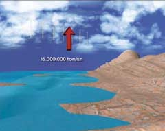
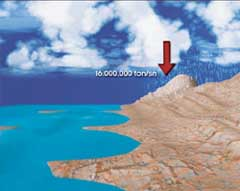

YAÐMURDAKÝ ÖLÇÜ
Kuran'da yaðmur hakkýnda verilen bir diðer bilgi ise, yaðmurun belli bir ölçü ile indirildiðidir. Zuhruf Suresi'nde þöyle buyrulur:
“Ki
O, belli bir miktar ile gökten su indirdi de,
onunla
ölü bir memleketi ‘diriltti (ve her yanýna hayat) yaydý';
siz
de böyle (kabirlerinizden diriltilip) çýkarýlacaksýnýz.„
(Zuhruf Suresi, 11)
Yaðmurdaki bu ölçü de, yine çaðýmýzdaki araþtýrmalarla tespit edilmiþtir. Ölçümlere göre, yeryüzünden bir saniyede 16 milyon ton su buharlaþmaktadýr. Bir yýlda bu miktar 505 trilyon tona ulaþýr. Bu, ayný zamanda bir yýlda Dünya'ya yaðan yaðmur miktarýdýr. Yani su, sürekli bir denge içinde, "bir ölçüye göre" dönüp durmaktadýr. Yeryüzündeki hayatýn devamý da, bu su döngüsü sayesinde saðlanýr. Ýnsan sahip olduðu tüm teknolojik imkanlarý kullansa dahi bu döngüyü asla yapay olarak gerçekleþtiremez.
Eðer
bu miktarda en küçük bir deðiþiklik bile olsa, kýsa bir zaman sonra büyük
bir ekolojik dengesizlik ortaya çýkacak ve bu da hayatýn sonunu getirecektir.
Fakat hiçbir zaman böyle olmaz; yaðmur, Kuran'da bildirildiði gibi, yeryüzüne
her sene ayný miktarda inmeye devam eder.
|
 |
Her yýl gökyüzüne buharlaþan ve tekrar yeryüzüne yaðmur olarak düþen su miktarý "sabit"tir: 16 milyon ton. Bu sabit miktar Kuran'da "belli bir miktar su"yun gökten indirilmesi olarak haber verilmektedir. Ekolojik dengenin ve dolayýsýyla hayatýn devamlýlýðýnýn saðlanmasýnda bu miktarýn sabit olmasýnýn önemi son derece büyüktür. |  |